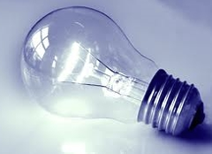
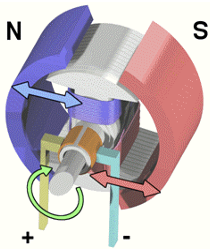

La corriente eléctrica causa diversos efectos sobre los elementos que atraviesa, transformándose en otros tipos de energía. Este año estudiaremos algunos de dichos efectos.
1. ENERGÍA CALORÍFICA (CALOR)
Cuando los electrones circulan por un conductor, chocan contra las partículas (núcleos y electrones) del material por el que circulan. De este modo la energía que transportan se convierte en energía calorífica. Este fenómeno se conoce con el nombre de efecto Joule.
Dicho efecto es por un lado un inconveniente, ya que se pierde energía eléctrica al hacer circular la corriente por cualquier conductor. Sin embargo, puede aprovecharse en equipos como planchas, hornos, secadores, cafeteras y en cualquier dispositivo eléctrico que transforma la energía eléctrica en calor. Los elementos empleados para producir calor a partir de la luz eléctrica son las resistencias.
2. ENERGÍA LUMÍNICA (LUZ)
Al ser atravesados por la corriente, los cuerpos incrementan su temperatura. Si este aumento es importante, los cuerpos se vuelven incandescentes, es decir, comienzan a emitir luz. Al principio la luz es roja y a medida que sigue aumentando la temperatura la luz tiende al blanco.
En este fenómeno de incandescencia se basa el funcionamiento de las bombillas convencionales, llamadas por ello, lámparas de incandescencia.

3. ENERGÍA MECÁNICA (MOVIMIENTO)
La conversión de energía eléctrica en mecánica se realiza a través de motores, por ejemplo, en un tren eléctrico, en una batidora, en un exprimidor, en un ventilador, etc. Su funcionamiento se basa en el fenómeno de inducción electromagnética. En dicho efecto, la corriente que pasa por un conductor genera a su alrededor un campo electromagnético, comportándose como un imán. Este efecto se utiliza en los motores eléctricos, los cuales aprovechan las fuerzas de atracción y repulsión entre un imán y un hilo conductor enrollado colocado en su interior. Estas fuerzas provocan el movimiento del eje del motor.
